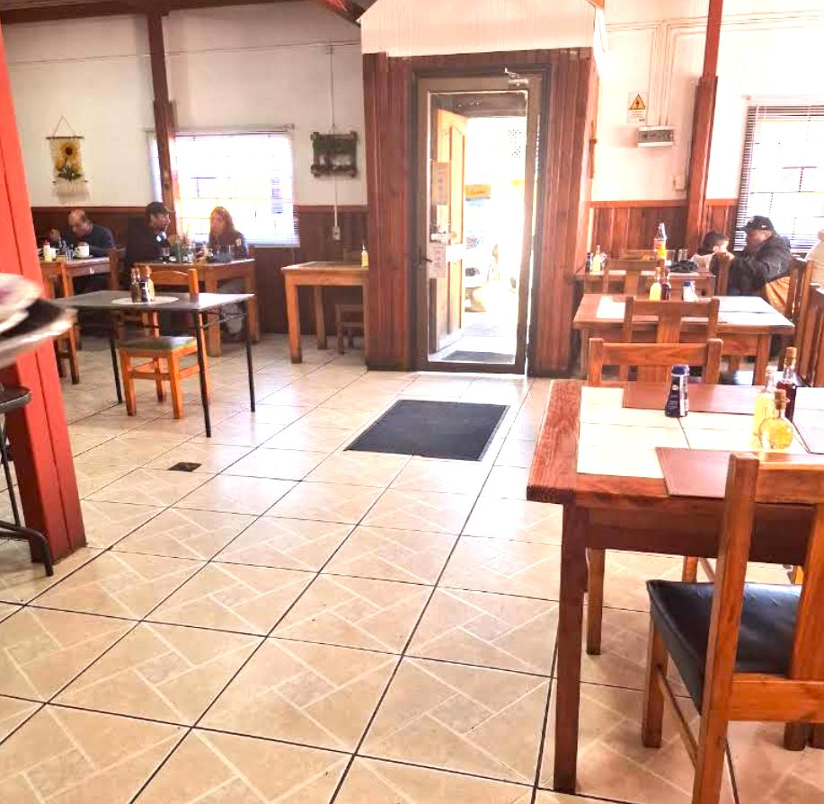

«Precios económicos, comida muy rica y muy buena atención.»
Lun a sáb · 11:00 a 16:30
Loncoche · La Araucanía · Desde 1998
La picada premiada
de La Araucanía
Cazuela recién servida, siete u ocho platos caseros que cambian cada día, y la atención de la familia de siempre. En Ignacio Serrano 144, en pleno centro de Loncoche.
- 1998cocinando en Loncoche
- 4,6★puntuación en Google
- 98%lo recomienda en Facebook
- 1.ªpicada de La Araucanía · 2014
Para servirse
La carta de la casa
Comida casera, de olla grande: todo preparado, llegar y servirse. Estos son los platos por los que la gente vuelve, según sus propias reseñas.
Cazuelas
El plato que hizo famosa esta casa.
-
Cazuela de vacuno
$6.500Caldo de olla, abundante, con la papa entera, el choclo y la carne que se deshace.
-
Cazuela de ave
$6.000La versión de campo, con presa grande y caldo dorado.
De la tradición
Lo que casi nadie sigue haciendo a mano.
-
Tortilla de choclo
$4.500Dorada por fuera, dulce por dentro.
-
Legumbres de la casa
$5.500Porotos, lentejas o garbanzos según el día, guisados despacio.
Platos de fondo
-
Asado a la olla
$7.500 -
Carne mechada
$7.000 -
Chuletas de cerdo
$7.000 -
Pollo al horno
$6.500 -
Churrasco
$6.000
Del río y del mar
-
Merluza frita
$6.500Con agregado a elección.
-
Trucha de la zona
$8.000
Postres y para tomar
Sección de ejemplo — se completa con la carta real del local.
-
Leche asada
$2.500 -
Mote con huesillo
$2.500 -
Bebidas y jugos naturales
$1.800
Los platos de esta carta aparecen nombrados en las reseñas y la prensa del local. Los valores marcados con línea punteada son referenciales de demostración: se reemplazan con la carta vigente del restaurante.
Quiénes somos
La casa que levantó
el Pitín
Sergio Antonio Rivas —el "Pitín"— empezó cocinando en una casa arrendada. Cuando heredó de sus abuelos una casona de más de treinta años en Loncoche, levantó en ella su propio restaurante. Era 1998.
La apuesta era simple y sigue siendo la misma: olla grande, comida casera y precio justo. En 2014, la gente respondió: con 589 votos, Donde Pitín fue elegida la mejor picada de La Araucanía en el concurso de Sernatur, por sobre otras dieciséis cocinerías de la región.
Sergio falleció en 2015, y desde entonces la casa la lleva su señora, Verónica Mella, con la familia. Ni la pandemia la detuvo: cuando no se pudo atender en el salón, aprendieron delivery sobre la marcha y siguieron cocinando. Hoy el local tiene dos pisos, mesas en el balcón y la misma cazuela que hizo famoso al Pitín.
-
1998
Abre Donde Pitín
En la casona heredada de los abuelos, en Ignacio Serrano 144.
-
2014
La mejor picada de La Araucanía
Elegida por votación popular en el concurso de Sernatur, con 589 votos.
-
Hoy
La misma familia
Verónica Mella y los suyos mantienen la cocina que fundó el Pitín.
Celebraciones
La casa también se arrienda entera
Desde siempre, las familias de Loncoche celebran sus fechas grandes en el Pitín.
-
Bautizos
El almuerzo largo después de la iglesia.
-
Matrimonios
Banquete casero para toda la familia.
-
Licenciaturas
La celebración que se merece el cartón.
-
Almuerzos de empresa
Por confirmar con el local.
Lo que dice la gente
No lo decimos nosotros
- 4,6 de 5 en Google Maps
- 98% recomendado en Facebook · 30 opiniones
- 5,0 en TripAdvisor · N.º 3 de Loncoche
Mejor picada de La Araucanía · Sernatur 2014
Elegida por votación popular con 589 votos, entre diecisiete picadas de toda la región.
La llama la mejor picada de Loncoche: destaca la variedad de platos caseros, la ensalada surtida, el pan y el ají de la casa, y la atención.
Para mirar
El local y los platos




Reserva directa
Aparta tu mesa
Completa los datos y se abre WhatsApp con el mensaje listo. No se envía nada desde acá ni queda registrado: el mensaje lo mandas tú.
La mesa queda confirmada recién cuando el local responde el mensaje. También aceptan retiro en el negocio.
Cómo llegar
Ignacio Serrano 144, Loncoche
El local queda en pleno centro de Loncoche, y el pueblo está pegado a la Ruta 5 Sur, a mitad de camino entre Temuco y Valdivia: la parada obligada si andas viajando por la carretera con hambre de comida de verdad.
- Dirección
- Ignacio Serrano 144, sector centro
Loncoche, Región de La Araucanía - Referencias
- Frente al colegio Santa Cruz, a una cuadra del supermercado Unimarc y a una del terminal de buses.
- En auto
- Desde la Ruta 5 Sur, tomar el acceso a Loncoche y seguir hasta el centro: son un par de minutos.
- Coordenadas
- -39.368352, -72.631111
Antes de venir
Preguntas frecuentes
¿Cómo reservo una mesa?
Por WhatsApp: usa el formulario de arriba o escribe directo al número de la sección de contacto. La reserva queda confirmada cuando el local responde el mensaje.
¿Qué días y a qué hora abren?
El horario publicado es de 11:00 a 16:30 —es una casa de almuerzos—, pero los días exactos hay que confirmarlos con el local por WhatsApp.
¿Hacen eventos y celebraciones?
Sí: bautizos, matrimonios y licenciaturas se han celebrado ahí toda la vida. Conviene cotizar con anticipación por WhatsApp.
¿Puedo pedir para llevar?
Sí, el local acepta retiro en el negocio: encarga por WhatsApp y pasa a buscar tu pedido.
¿Dónde quedan exactamente?
En Ignacio Serrano 144, en el centro de Loncoche: frente al colegio Santa Cruz, a una cuadra del Unimarc y a una del terminal de buses.
¿Aceptan tarjetas?
Por confirmar con el local: medios de pago aceptados (efectivo, débito, crédito, transferencia).
¿Tienen reparto a domicilio?
Durante la pandemia hicieron delivery en Loncoche. Confirmar por WhatsApp si el servicio sigue disponible.
Hablemos
Contacto
Atiende la misma familia que cocina.
- WhatsApp +56 9 8911 6716
- Correo
- Dirección Ignacio Serrano 144, Loncoche
- Horario Lun a sáb · 11:00 a 16:30
- Redes Facebook